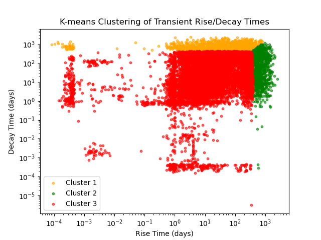
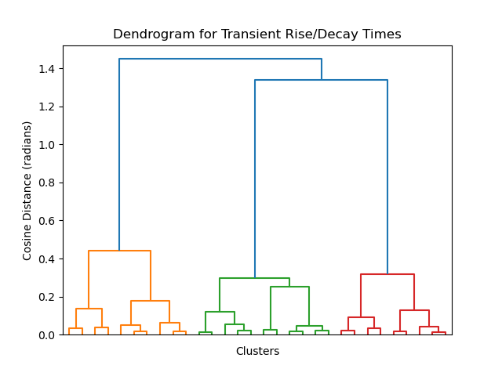
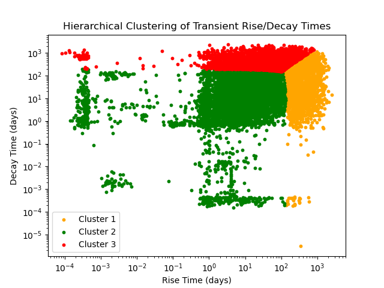

Overview
Clustering refers to a technique of "unsupervised" machine learning. More specifically, this technique determines whether or not the data of interest can be split into groups or categories. This implies that the data does not need to be labeled initially. In order to define groups or categories, a distance measurement is needed to measure where the data points are relative to each other. This is where clustering techniques can become more adaptable to the data! The two main types of clustering that will be used here are partitioned clustering and hierarchical clustering. The conceptual difference between these is that partitioned clustering pre-defines some number of non-overlapping groups and assigns the data points to these based on some similarity measurement, while hierarchical clustering builds clusters from individual points based on some similarity measurement. The similarity measurements can be Euclidean or non-Euclidean distances, and could even be other types of measurements, such as angles. In the context of astrophysical transient detections, clustering techniques may be able to identify different types of transients based on their typical variability without the need to analyze a few detections in detail. To answer this questions, these techniques will be applied to the transient rise/decay times and the transient flux rise/decay (or flux ratio) mentioned in the DataPrep_EDA tab.


Data Prep
Since clustering will categorize the data into groups, only unlabeled numeric data is needed. The labels will be a result of the clustering technique itself. In the context of astrophysical transient detections, clustering techniques may be able to identify different types of transients based on their typical variability without the need to analyze a few detections in detail. These transient "types" will be the labels that result from clustering. In the literature, scientists already know about several different transient types based on the signatures that we detect, some of which are described in the Introduction tab. The goal of clustering here is to see whether or not k-means clustering and hierarchical clustering can match these transient types within 10 partitions of ZTF data, as described in the DataPrep_EDA tab. To answer these questions, these techniques will be applied to the transient rise and decay times mentioned in the DataPrep_EDA tab. An image of this sample of data is provided in Figure 3 below. This data is a result of the data cleaning that was also described in the DataPrep_EDA tab. Since the original data table contains over 2 million rows, only the first 20,000 rows were chosen for this analysis.

- Lightcurves ("s3://ipac-irsa-ztf/ztf/enhanced/dr24/lc/hats")
Code
For k-means clustering, the optimal number of clusters was chosen using the silhouette method. This method defines a silhouette score, which compares the distance between a data point and its own cluster, and the distance between a data point and the nearest other cluster. A positive silhouette score indicates that the data point is well-placed in its own cluster, while a negative silhouette score indicates that it should be moved to another cluster. The number of clusters chosen ranged from k=2 to k=10, as shown in Figure 4 below. The code for this process can be found under the "Clustering" section of the jupyter notebook link below.
For hierarchical clustering, the chosen distance measure was cosine similarity. Rather than measuring the Euclidean distance between data points, this measures the angle between vectors in the dataset. The code for this process can also be found under the "Clustering" section of the jupyter notebook link below.
Results




Conclusions
Using the figures from the results section above, both k-means clustering and hierarchical clustering produce three categories of transients based solely on their rise and decay times, which is one source of variability that scientists are trying to understand. The primary difference between the two clustering methods is the location of the decision boundary, where the decision boundary for k-means clustering is larger by a factor of about 4 for both rise and decay time compared to hierarchical clustering. Two of these clusters have a more narrow range of rise and decay times. For k-means clustering, these correspond to clusters 1 (orange) and 2 (green). Cluster 1 contains transient rise times that span from a fraction of a day to about 1000 days, while cluster 2 contains transient rise times that span from about 400 days to 1000 days. Cluster 1 contains transient decay times that span from about 400 days to 2000 days, while cluster 2 contains transient decay times that span from a fraction of a day to about 1000 days. On the other hand, cluster 3 contains a very wide range of both rise and decay times, spanning a fraction of a day to a few hundred days in each case. Before confirming that these are accurate clusters of different transient types, there are several sources of uncertainty that need to be analyzed more carefully. First, the way that the rise and decay times are calculated here only consider the brightest observation of each source. In reality, each source with multiple photometric detections could have multiple transients within the same light curve, which may influence the shape and number of clusters shown here. Second, these rise and decay times should be compared with observations of individual transient detections which have a known type.